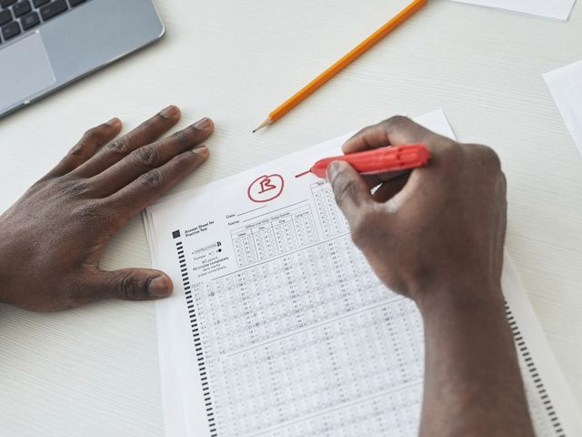
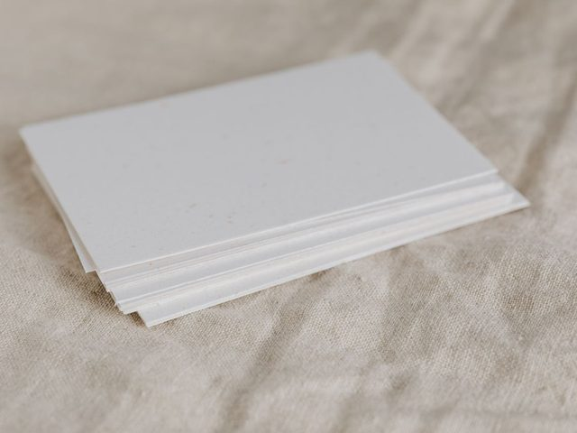

LALA WORD · UNIT 15
一字多義（十五）
The Power of Music
30 個單字一字多義
本單元單字一覽
cover 是蓋子，也是「翻唱」；ring 是戒指，也是「（電話）響」。這個單元有 4 個主題單字、21 個更多單字，再整理 probably／possible／perhaps、except／besides／beside，和字首 im-、字尾 -less。
playcoverrisepublicappearbottombowcharacterdrawfoolfryheatjokelinemarknoticepaperpinringroundslidesmokesquarestringtapeimpossibleimpolitecarelessuselessworthless
每個字先聽 🔊，再一個意思一個意思看例句。
1. play 主題單字．5 個意思

play
play - played - played - playing
v.演奏（樂器）play + the + 樂器
My sister plays the violin.
我姊姊拉小提琴。
v.播放
Can you play that song again?
你可以再播一次那首歌嗎？
v.玩；從事運動play + 球類
Let's play basketball after school.
放學後我們去打籃球吧。
n.戲劇；劇本
Our class put on a play.
我們班演了一齣戲。
n.比賽（態度）
Fair play is more important than winning.
公平比賽比贏更重要。
2. cover 主題單字．5 個意思

cover
cover - covered - covered - covering
v.覆蓋be covered with 被…覆蓋
The mountain is covered with snow.
山上覆蓋著雪。
n.蓋子；封面Don't judge a book by its cover. 人不可貌相
I like the cover of this book.
我喜歡這本書的封面。
v.包含；涵蓋
The test will cover Units 1 to 4.
這次考試範圍是第一到第四課。
v.翻唱
The band covered an old song.
樂團翻唱了一首老歌。
n.掩護；遮蔽take cover 躲避
We took cover under a tree when it rained.
下雨時我們在樹下躲雨。
3. rise 主題單字．4 個意思
rise
rise - rose - risen - rising
v.增加；上漲
Prices keep rising.
物價一直上漲。
n.上升；增加
There is a rise in the number of tourists.
觀光客人數增加了。
v.起身；站起來
Please rise for the national anthem.
請起立唱國歌。
v.（太陽、月亮）升起
The sun rises in the east.
太陽從東方升起。
4. public 主題單字．3 個意思

public
adj.公開的in public 公開地；當眾
Don't shout in public.
不要在公共場所大叫。
adj.公共的
There is a public library near my house.
我家附近有一間公立圖書館。
n.大眾；民眾the public 大眾
The museum is open to the public.
這間博物館開放給大眾參觀。
5. appear 更多單字．3 個意思

appear
appear - appeared - appeared - appearing
v.出現
A rainbow appeared after the rain.
雨後出現了一道彩虹。
v.登場
The singer will appear on stage at eight.
歌手八點登台。
v.看起來；似乎appear to 似乎
He appears to be tired.
他看起來很累。
6. bottom 更多單字．4 個意思
⬇️
bottom
複數 bottoms
adj.底部的
The socks are in the bottom drawer.
襪子在最下面的抽屜裡。
n.底部from the bottom of one's heart 打從心底
There is some sugar at the bottom of the cup.
杯底有一些糖。
n.末端；最後一名
Our team is at the bottom of the list.
我們隊排在最後。
n.屁股
The baby fell on his bottom.
寶寶一屁股跌坐在地上。
7. bow 更多單字．5 個意思

bow
bow - bowed - bowed - bowing
v.鞠躬（鞠躬唸 [baʊ]）
The students bowed to the teacher.
學生們向老師鞠躬。
n.鞠躬take a bow 鞠躬致意
The actors took a bow at the end.
演員們最後鞠躬謝幕。
v.使彎曲
The trees bowed in the strong wind.
樹在強風中彎下腰。
n.弓（弓、蝴蝶結唸 [bo]）
He shot an arrow with his bow.
他用弓射了一支箭。
n.蝴蝶結
She wears a red bow in her hair.
她頭上綁著紅色蝴蝶結。
8. character 更多單字．3 個意思

character
複數 characters
n.角色
Who is your favorite cartoon character?
你最喜歡的卡通人物是誰？
n.性格
He has a kind character.
他的個性很善良。
n.字
How many Chinese characters can you write?
你會寫幾個中文字？
9. draw 更多單字．4 個意思

draw
draw - drew - drawn - drawing
v.畫
Can you draw a cat?
你會畫貓嗎？
v.拉；抽（籤）draw lots 抽籤
Draw the curtains, please.
請拉上窗簾。
v.吸引draw attention 吸引注意
The show drew a big crowd.
這場表演吸引了一大群人。
n.平手
The game ended in a draw.
比賽以平手結束。
10. fool 更多單字．3 個意思
🤡
fool
fool - fooled - fooled - fooling
n.傻瓜
I felt like a fool.
我覺得自己像個傻瓜。
v.愚弄；欺騙
You can't fool me!
你騙不了我的！
v.胡鬧（fool around）fool around 鬼混；胡鬧
Stop fooling around and do your homework.
別再胡鬧了，快去寫功課。
11. fry 更多單字．3 個意思
fry
fry - fried - fried - frying；複數 fries
v.煎；炸；炒fried rice 炒飯；fried chicken 炸雞
Dad fried some eggs for breakfast.
爸爸煎了幾顆蛋當早餐。
v.曬傷
I got fried at the beach.
我在海邊曬傷了。
n.薯條（fries）
I'd like a burger and fries.
我要一個漢堡和薯條。
12. heat 更多單字．3 個意思

heat
heat - heated - heated - heating
v.加熱heat up 加熱
Heat the milk before you drink it.
牛奶熱一下再喝。
n.熱；高溫
I can't stand the summer heat.
我受不了夏天的炎熱。
n.火力
Cook the soup on low heat.
用小火煮湯。
13. joke 更多單字．3 個意思
joke
joke - joked - joked - joking
v.開玩笑
Don't worry. I'm only joking.
別擔心，我只是開玩笑的。
n.笑話tell a joke 說笑話
Grandpa told us a funny joke.
爺爺講了一個好笑的笑話。
n.荒唐可笑的事物
The test was so easy. It was a joke!
考試簡單得像開玩笑一樣！
14. line 更多單字．5 個意思
line
line - lined - lined - lining
n.線條
Draw a straight line.
畫一條直線。
n.車道
Drivers should stay between the lines.
駕駛應該待在自己的車道裡。
n.隊伍
There is a long line at the ice cream shop.
冰淇淋店前大排長龍。
n.臺詞（lines）
I need to learn my lines for the play.
我要背戲劇的臺詞。
v.排隊（line up）line up 排隊
Please line up at the door.
請在門口排隊。
15. mark 更多單字．4 個意思

mark
mark - marked - marked - marking
v.標記
Mark the right answers with a pen.
用筆標出正確答案。
v.紀念
We had a party to mark Grandma's 80th birthday.
我們開派對慶祝奶奶八十歲生日。
n.記號；痕跡
There are dirty marks on the wall.
牆上有髒髒的痕跡。
n.分數full marks 滿分
She got full marks in English.
她英文考滿分。
16. notice 更多單字．2 個意思

notice
notice - noticed - noticed - noticing
v.注意到
Did you notice his new haircut?
你有注意到他的新髮型嗎？
n.通知；告示
Read the notice on the board.
看一下公布欄上的通知。
17. paper 更多單字．3 個意思

paper
paper - papered - papered - papering
n.紙a piece of paper 一張紙
Can I have a piece of paper?
可以給我一張紙嗎？
n.報紙；報告
Dad reads the paper every morning.
爸爸每天早上看報紙。
v.貼壁紙
We papered the bedroom walls.
我們在臥室牆上貼了壁紙。
18. pin 更多單字．3 個意思

pin
pin - pinned - pinned - pinning
v.釘住；別住
Pin the poster on the board.
把海報釘在布告欄上。
v.弄清楚（pin down）pin down 弄清楚
We can't pin down the problem.
我們找不出問題在哪裡。
n.別針；圖釘
She wears a flower pin on her coat.
她外套上別著一個花朵別針。
19. ring 更多單字．4 個意思

ring
ring - rang - rung - ringing
v.（電話、鈴）響
The phone is ringing.
電話在響。
v.打電話
I'll ring you tonight.
我今晚打電話給你。
n.戒指
She wears a gold ring.
她戴著一枚金戒指。
n.圓圈；環
The kids danced in a ring.
孩子們圍成一圈跳舞。
20. round 更多單字．4 個意思

round
round - rounded - rounded - rounding
v.繞行
The bus rounded the corner.
公車轉過街角。
prep.繞著；圍著同 around
We sat round the table.
我們圍著桌子坐。
n.回合
She won the first round.
她贏了第一回合。
adj.圓的
The earth is round.
地球是圓的。
21. slide 更多單字．3 個意思

slide
slide - slid - slid - sliding
n.溜滑梯
The kids are playing on the slide.
孩子們在玩溜滑梯。
v.滑動；滑落
The book slid off the desk.
書從桌上滑下來。
v.悄悄地移動
The cat slid into the room.
貓悄悄溜進房間。
22. smoke 更多單字．3 個意思

smoke
smoke - smoked - smoked - smoking
n.煙There's no smoke without fire. 無風不起浪
Smoke is coming out of the kitchen!
廚房冒出煙來了！
v.冒煙
The old car is smoking.
那台老車在冒煙。
v.抽菸
Smoking is bad for your health.
抽菸對健康有害。
23. square 更多單字．5 個意思

square
square - squared - squared - squaring
n.正方形
Cut the paper into squares.
把紙剪成正方形。
n.廣場
There is a big tree in the square.
廣場上有一棵大樹。
adj.平方的
The room is 20 square meters.
這個房間二十平方公尺。
v.使成正方形
Square the corners of the box.
把盒子的角弄方正。
v.與…一致square with 與…一致
His story doesn't square with the facts.
他的說法和事實不符。
24. string 更多單字．5 個意思

string
string - strung - strung - stringing
n.細繩a piece of string 一段繩子
Tie the box with some string.
用細繩把盒子綁起來。
n.一串
She bought a string of beads.
她買了一串珠子。
n.一連串
He asked a string of questions.
他問了一連串的問題。
n.（樂器的）弦
A guitar has six strings.
吉他有六根弦。
v.串起
We strung lights across the yard.
我們在院子裡掛起一串燈。
25. tape 更多單字．3 個意思

tape
tape - taped - taped - taping
v.用膠帶黏
Tape the note to the door.
用膠帶把紙條貼在門上。
n.膠帶
I need some tape to fix this.
我需要膠帶來修這個。
n.錄音帶；錄影帶on tape 被錄下來
The thief was caught on tape.
小偷被錄影機拍到了。
26. impossible 更多單字．1 個意思
🚫
impossible
im- + possible
adj.不可能的
Nothing is impossible.
沒有不可能的事。
27. impolite 更多單字．1 個意思
🙊
impolite
im- + polite
adj.不禮貌的
It's impolite to talk with your mouth full.
嘴裡有食物還說話是不禮貌的。
28. careless 更多單字．1 個意思
careless
care + -less
adj.粗心的
I made a careless mistake on the test.
我考試時犯了一個粗心的錯誤。
29. useless 更多單字．1 個意思
🗑️
useless
use + -less
adj.沒用的
This old phone is useless now.
這支舊手機現在沒用了。
30. worthless 更多單字．1 個意思
🪙
worthless
worth + -less
adj.沒有價值的
The fake coin is worthless.
這枚假硬幣一文不值。
易混淆字：probably／possible／perhaps
| 單字 | 用法 | 例句 |
|---|---|---|
| probably | （副詞）很可能；大概，把握比較大 | He will probably be late. |
| possible | （形容詞）可能的：It's possible (that)…／It's possible for + 人 + to V | It's possible that it will snow. |
| perhaps | （副詞）或許，把握比較小，語氣委婉 | Perhaps she forgot. |
易混淆字：except／besides／beside
| 單字 | 意思 | 例句 |
|---|---|---|
| except | 除了…之外（不包括） | Everyone came except Tom.（Tom 沒來） |
| besides | 除了…之外還有（包括在內） | Besides English, she speaks Japanese. |
| beside | 在…旁邊（只差一個 s，意思完全不同） | The cat is sitting beside me. |
字首 im-、字尾 -less
| 原來的字 | 加字首／字尾 | 意思 |
|---|---|---|
| possible 可能的 | impossible | 不可能的 |
| polite 有禮貌的 | impolite | 不禮貌的 |
| care 小心 | careless | 粗心的 |
| use 使用 | useless | 沒用的 |
| worth 價值 | worthless | 沒有價值的 |
im-＝不；-less＝沒有（without）。
一字多義：最常見 vs. 容易忽略的意思
| 單字 | 最常見的意思 | 容易忽略的意思 |
|---|---|---|
| cover | 蓋子；覆蓋 | 翻唱；涵蓋（考試範圍） |
| bow | 鞠躬（[baʊ]） | 弓；蝴蝶結（[bo]） |
| character | 角色 | 性格；字 |
| draw | 畫 | 平手；吸引 |
| line | 線 | 隊伍；臺詞 |
| ring | 戒指 | （電話）響 |
| square | 正方形 | 廣場 |
| string | 細繩 | 樂器的弦；一連串 |
快問快答：這句的 粗體字 是什麼意思？
1Fair play is more important than winning.比賽（態度）
2We took cover under a tree when it rained.掩護；遮蔽
3The sun rises in the east.（太陽、月亮）升起
4The museum is open to the public.大眾；民眾
5He appears to be tired.看起來；似乎
6The baby fell on his bottom.屁股
7She wears a red bow in her hair.蝴蝶結
8How many Chinese characters can you write?字
快問快答：這句的 粗體字 是什麼意思？
1The game ended in a draw.平手
2Stop fooling around and do your homework.胡鬧（fool around）
3I'd like a burger and fries.薯條（fries）
4Cook the soup on low heat.火力
5The test was so easy. It was a joke!荒唐可笑的事物
6Please line up at the door.排隊（line up）
7She got full marks in English.分數
8Read the notice on the board.通知；告示
學完了！接下來
複習方法
review
- 回到「📗 單字卡」，按「遮中文」，看例句說出每個意思
- 特別記「容易忽略的意思」（例如 pen 圍欄、ball 舞會）
- 每個例句跟著 🔊 唸一次
準備好了
- 按右上角「📝 前往測驗」
- 測驗錯的題目要訂正到全對
- 訂正完成補送 1 點